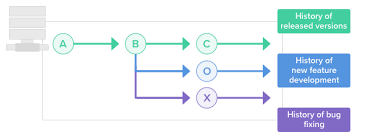

Git
Git (/ɡɪt/) is software for tracking changes in any set of files, usually used for coordinating work among programmers collaboratively developing source code during software development. Its goals include speed, data integrity, and support for distributed, non-linear workflows (thousands of parallel branches running on different systems)
Branches
A branch in Git is simply a lightweight movable pointer to one of these commits. The default branch name in Git is master . As you start making commits, you're given a master branch that points to the last commit you made. Every time you commit, the master branch pointer moves forward automatically
Merge
Merging is Git's way of putting a forked history back together again. The git merge command lets you take the independent lines of development created by git branch and integrate them into a single branch.
Commit
The git commit command captures a snapshot of the project's currently staged changes. Committed snapshots can be thought of as “safe” versions of a project—Git will never change them unless you explicitly ask it to.
Tags
Tags are ref's that point to specific points in Git history. Tagging is generally used to capture a point in history that is used for a marked version release (i.e. v1. 0.1). A tag is like a branch that doesn't change. Unlike branches, tags, after being created, have no further history of commits.
Repository
A Git repository is the . git/ folder inside a project. This repository tracks all changes made to files in your project, building a history over time. Meaning, if you delete the . git/ folder, then you delete your project's history.